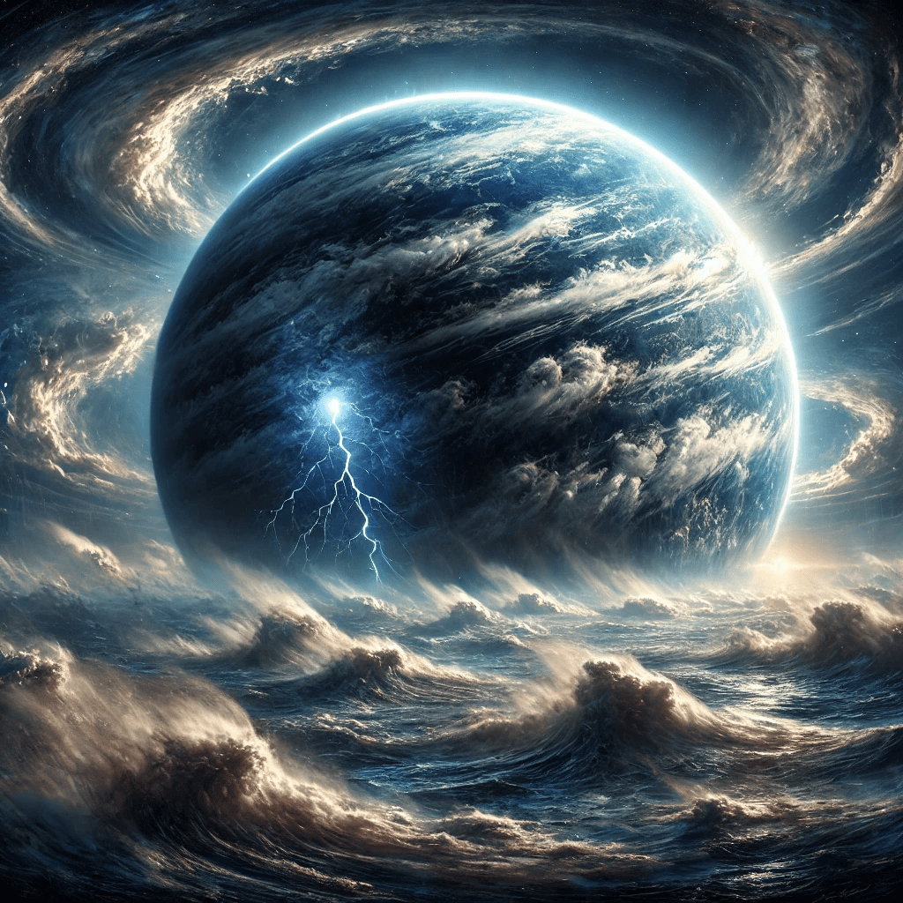
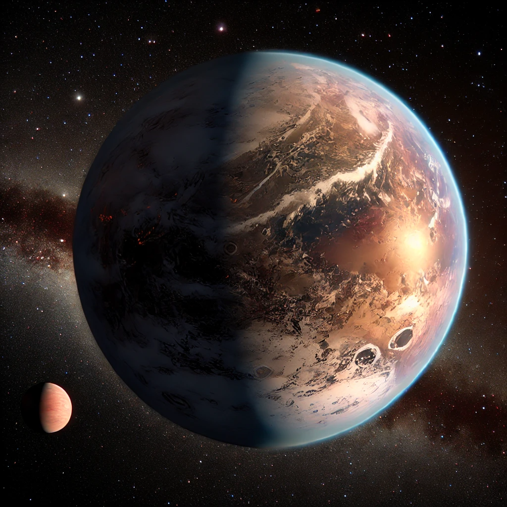

"Exoplanets: Exploring New Worlds Beyond Our Solar System"
Exoplanets, or planets beyond our solar system, have become one of the most exciting areas of astronomical research.
Since the first discovery of an exoplanet in the 1990s, scientists have identified thousands of these distant worlds,
each offering unique insights into the diversity and complexity of planetary systems in the universe.
Some exoplanets are rocky and Earth-like, while others are gas giants or ice worlds, orbiting stars at varying distances.
The study of exoplanets not only deepens our understanding of how planetary systems form and evolve but also raises intriguing
possibilities about the existence of life elsewhere in the cosmos.
This presentation will explore the methods used to detect exoplanets, the fascinating variety of worlds discovered,
and the potential for finding habitable planets beyond our own, but first, we have to answer one question.
What is an Exoplanet?
Exoplanet 55 Cancri-e NASA
An exoplanet, or extrasolar planet, is a planet that exists outside of our solar system, orbiting
a star other than our Sun. Unlike the planets in our solar system, exoplanets are located
in distant star systems, and they vary widely in size, composition, and distance from their host stars.
Some exoplanets are similar to Earth, with rocky surfaces, while others are gas giants like Jupiter or ice worlds.
Scientists study exoplanets to understand how planets form and evolve, and they are especially interested
in finding exoplanets that might be capable of supporting life. The discovery of exoplanets has expanded our
understanding of the universe and raised the possibility of habitable worlds beyond Earth.
What is the importance of learning about exoplanets?
Learning about exoplanets is crucial because it expands our understanding of the universe and how planetary systems
form and evolve. By studying these distant worlds, scientists can compare them to our own solar system, identifying
commonalities and differences that help refine theories of planet formation. Discoveries of exoplanets with diverse sizes,
compositions, and orbits demonstrate that the processes that shape planets are more varied and complex than previously thought.
This knowledge provides valuable insight into the conditions that give rise to planets and, potentially, life itself.
Another important reason to study exoplanets is the search for life beyond Earth. Some exoplanets are located in the
"habitable zone" of their stars, meaning they are at just the right distance for liquid water to exist, a key ingredient
for life as we know it. By learning more about these potentially habitable worlds, scientists can focus their search for
life on planets that are most likely to support it. This search not only advances our understanding of life's origins but
also addresses one of humanity's most profound questions: Are we alone in the universe?
Finally, studying exoplanets drives technological advancements and inspires future space exploration. The tools and methods
developed to detect and study exoplanets—such as powerful telescopes and innovative data analysis techniques—also have
applications in other areas of science and technology. In addition, the possibility of future missions to explore exoplanets
or their moons fuels public interest in space, encouraging the next generation of scientists and engineers to push the boundaries
of exploration.
"Somewhere, something incredible is waiting to be known." - Carl Sagan (Cosmos: A Personal Voyage) 1980.
Some curius facts about some Exoplanets
- Exoplanets with multiple suns:
Exoplanet Kepler-16 b NASA
Kepler-16b is a circumbinary planet, meaning it orbits two stars rather than just one, like our Sun. Discovered by NASA's
Kepler mission in 2011, Kepler-16b is about the size of Saturn and lies roughly 200 light-years away from Earth.
This planet has inspired comparisons to the iconic scene from Star Wars with its dual sunsets, though Kepler-16b
itself is likely cold and inhospitable due to its distance from its twin suns. Despite this, its discovery challenged
prior assumptions about planetary formation, showing that stable planetary orbits are possible in such complex systems.
Kepler-16b orbits its two stars in a nearly circular path, taking 229 Earth days to complete one orbit. The stars
it orbits are quite different: one is a K-type star, and the other is an even smaller
red dwarf. Despite having two suns, the planet is located beyond its system's habitable zone, making it too cold for
liquid water. Its discovery opened doors for searching for habitable planets in binary star systems, suggesting that more
diverse planetary environments could exist in the universe.
- Super-Earths (Kepler-452 b):
Exoplanet Kepler-452 b NASA
Kepler-452b, discovered in 2015, is one of the most famous examples of a Super-Earth. It's about 60% larger than Earth
and orbits within the habitable zone of a star very similar to our Sun, about 1,400 light-years away. This "cousin" of
Earth raised excitement because it has the potential to harbor liquid water, and possibly life, based on its size and the
estimated temperature of its surface. Though it's still unclear if Kepler-452b is rocky like Earth, its discovery has fueled
interest in finding habitable planets among the Super-Earth class.
Kepler-452b's host star, Kepler-452, is very similar to our Sun but about 1.5 billion years older. This is particularly
interesting because it means that if Kepler-452b had conditions similar to Earth, its star would be supplying more energy
over time as it ages, which might lead to a "runaway greenhouse effect." This effect could potentially turn the planet's
surface into a hotter, drier environment similar to Venus. Kepler-452b's star is also slightly larger and brighter than the
Sun.
- The wild weather of exoplanets (HD 189733 b):

Exoplanet HD 189733 b NASA
HD 189733b is a "hot Jupiter" exoplanet located 64 light-years away, known for its extreme weather patterns. It was first
discovered in 2005 and is notable for its cobalt blue appearance, which might suggest a serene ocean world, but in reality,
it's far from calm. The planet's atmosphere is filled with silicate particles, leading to sideways "glass rain," driven by
winds that travel at over 5,400 miles per hour. These extreme conditions provide valuable insights into atmospheric dynamics
on distant worlds and challenge scientists to rethink planetary weather as we know it.
The intense blue color of HD 189733b is thought to come from its high clouds made of silicate particles, which scatter blue
light. However, this exoplanet's atmosphere is filled with more mysteries. Observations show that
the planet's atmosphere contains trace amounts of water vapor and methane, but the extreme heat—exceeding 1,000°C
(1,800°F)—means any water or methane wouldn't survive long.
Up next, we'll share some insights about a few of the many exoplanets that have been discovered so far.
Terrenal Exoplanets:
Terrestrial exoplanets are rocky planets with solid surfaces, similar to Earth.
They may have atmospheres and, if located in the habitable zone, could potentially support liquid water and life.
See more
Kepler-974 b
KEPLER-186 f
Proxima Centauri b

TRAPPIST-1e
Kepler-452 b
Kepler-22 b
55 Cancri e
K2-18b
Kepler-62 f
Kepler-69 c
KOI-4878.01
Wolf 1061 c
EPIC 220674823 b
GJ 1132 c
Ross 128 b
Tau Ceti e
Gliese 667 Cc
TRAPPIST-1d
K2-101 b
Gliese 273b
KOI-812.03
KOI-3255.01
KOI-2529.02
Kepler-1438 b
K2-72e
Gaseous Exoplanets:
Gaseous exoplanets, like Jupiter and Saturn in our solar system, are composed mostly of hydrogen and helium. They have thick atmospheres and may not have solid surfaces.